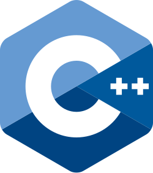
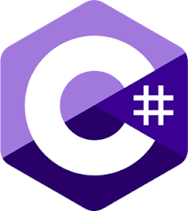

Python
Python es un lenguaje de alto nivel de programación interpretado cuya filosofía hace hincapié en la legibilidad de su código

Python es un lenguaje de alto nivel de programación interpretado cuya filosofía hace hincapié en la legibilidad de su código
C++ es un lenguaje de programación diseñado en 1979 por Bjarne Stroustrup. La intención de su creación fue extender al lenguaje de programación C y añadir mecanismos que permiten la manipulación de objetos.
Java es un lenguaje de programación y una plataforma informática que fue comercializada por primera vez en 1995 por Sun Microsystems.

C es un lenguaje de programación de propósito general originalmente desarrollado por Dennis Ritchie entre 1969 y 1972 en los Laboratorios Bell, como evolución del anterior lenguaje B, a su vez basado en BCPL.Al igual que B, es un lenguaje orientado a la implementación de sistemas operativos; concretamente Unix.

«C#» es un lenguaje de programación multiparadigma desarrollado y estandarizado por la empresa Microsoft como parte de su plataforma .NET, que después fue aprobado como un estándar por la ECMA e ISO. C# es uno de los lenguajes de programación diseñados para la infraestructura de lenguaje común.
JavaScript (JS) es un lenguaje de programación que se usa para crear páginas web interactivas. Permite a los desarrolladores crear contenido dinámico, como menús desplegables, gráficos animados y colores de fondo dinámicos.